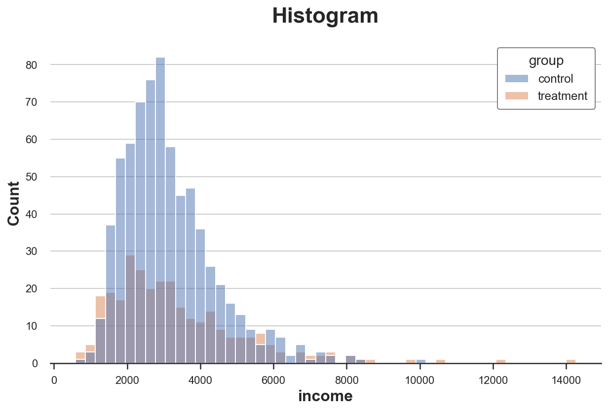
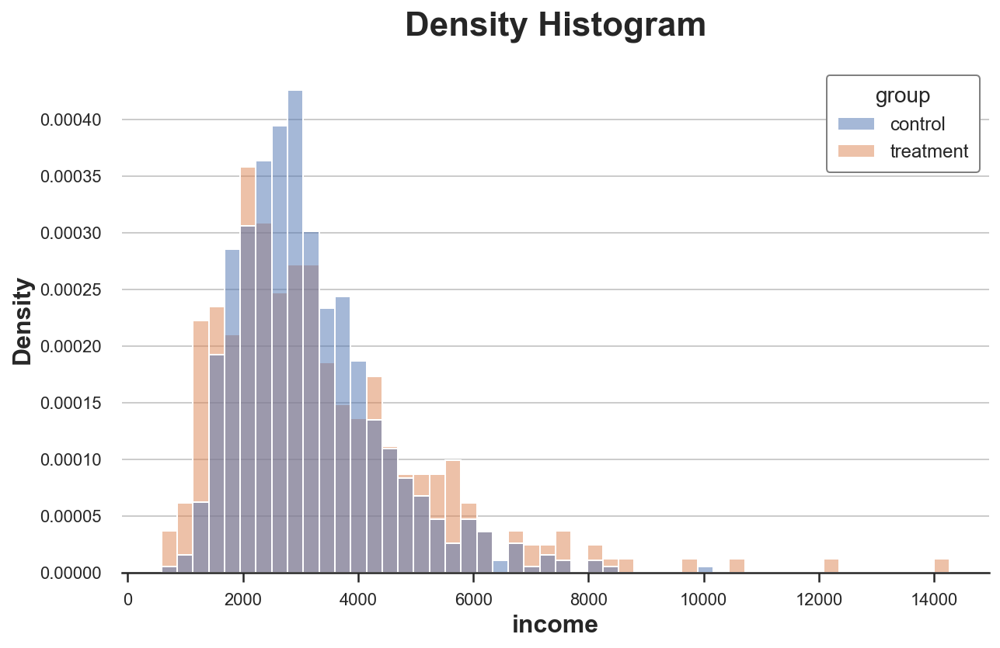
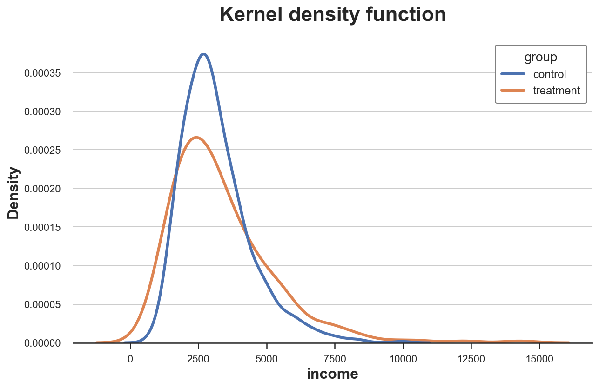
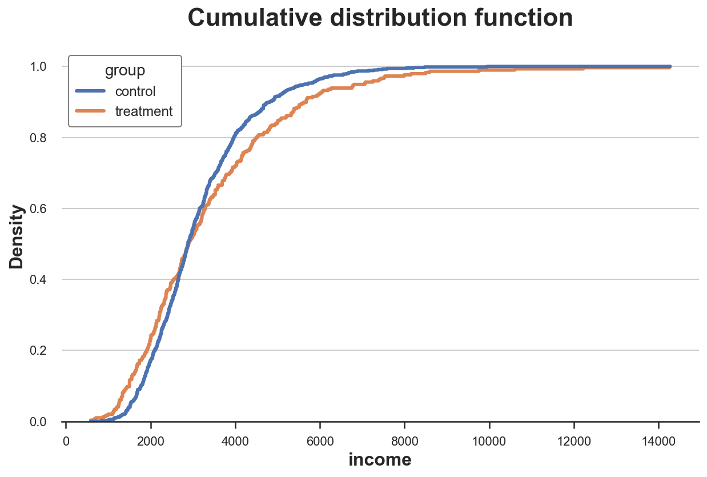
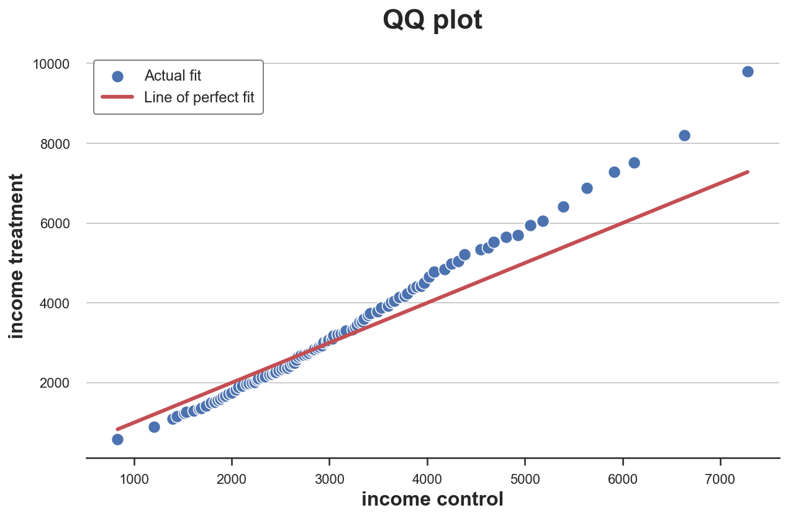
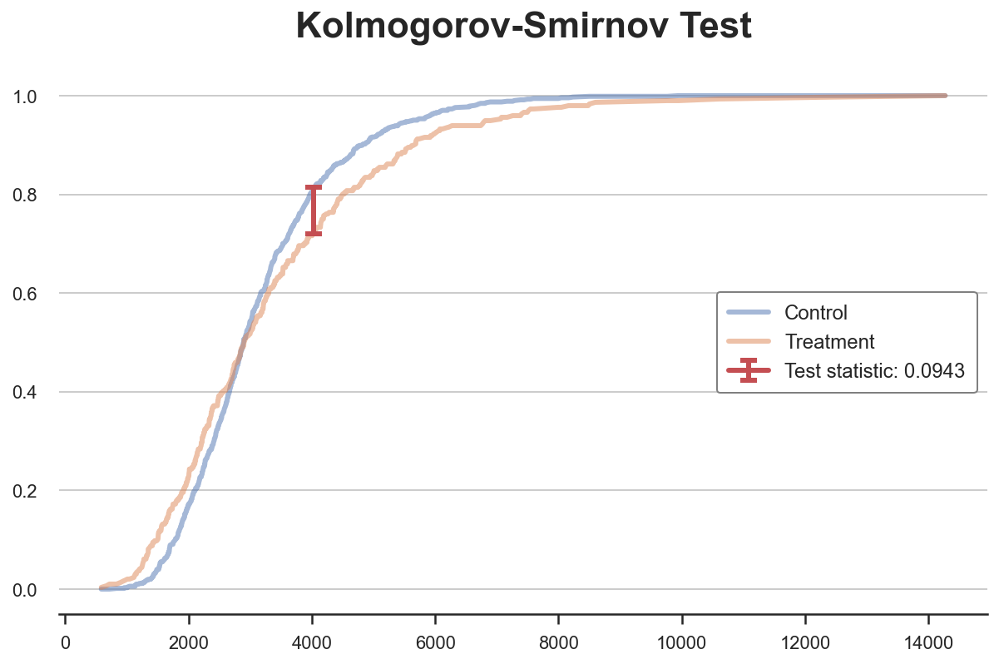
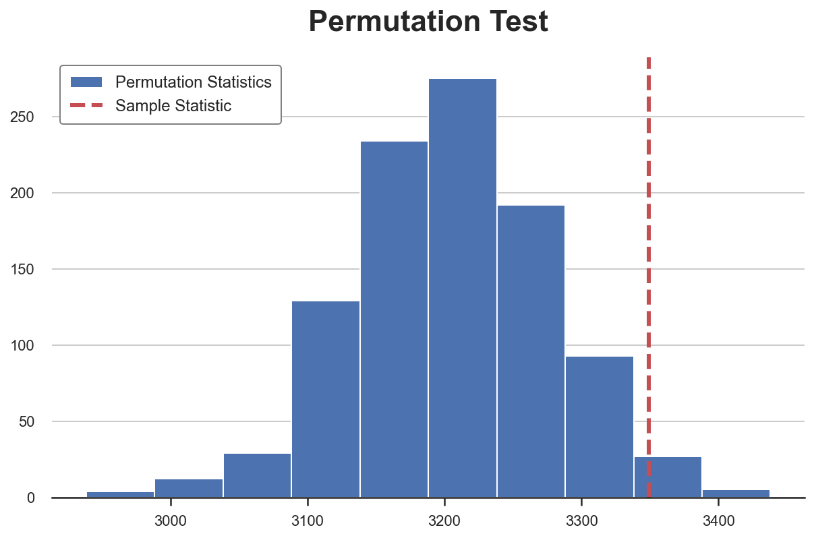

Comparing Distributions, From Zero to Hero

This problem often arises in causal inference when we have to assess the quality of randomization. The golden standard in causal inference are randomized control trials, also known in the industry as A/B tests. In practice, we randomly split the sample into a control and a treatment group and to compare the outcomes between the two groups. The idea is that, if randomization is done properly, the only difference between the two groups, one average, is the treatment. Therefore, we can attribute the differences in outcomes to the treatment effect alone.
The problem is that, sample size is always finite and therefore it can happen that, despite randomization, the two groups are not comparable. For example, we might have more females in one group, or older people, etc.. When it happens, we cannot be certain anymore that the difference is outcome is only due to the treatment and cannot be attributed to the inbalanced covariates instead. Therefore, it’s always important, after randomization, to check whether all observed variables are balance across groups and whether there are no systematic differences.
In this blog post, we are going to see different ways to compare two (or more) distributions and assess the magnitude and significance of their difference. We are going to consider two different approaches, graphical and numerical. The two approaches generally trade-off intuition with rigour: from plots we can assess subtle differences but it’s hard to assess whether these differences are systematic or due to noise.
The Data
Let’s start by loading the data. I assume we need to perform an experiment on a group of individuals and we have randomized them into a treatment and control group. What does the data look like?
I import the data generating process from src.dgp and some plotting functions and libraries from src.utils.
%matplotlib inline
%config InlineBackend.figure_format = 'retina'
from src.utils import *
from src.dgp import dgp_balance
df = dgp_balance().generate_data()
df.head()
| group | gender | age | income | |
|---|---|---|---|---|
| 0 | control | 0 | 37.0 | 2016.81 |
| 1 | control | 1 | 45.0 | 2665.92 |
| 2 | treatment | 0 | 22.0 | 1642.42 |
| 3 | control | 1 | 23.0 | 2396.40 |
| 4 | treatment | 1 | 50.0 | 4072.69 |
We have information on $1000$ individuals, for which we observe gender, age and income.
We now want to understand whether the treatment and control groups are comparable or if there are systematic difference between them.
Plots
Let’s concentrate on one variable: income. Does the income distribution differ between the two groups?
A first approach could be the boxplot. The boxplot is a good trade-off between summary statistics and data visualization: it gives us the quartiles of the distribution and it also allows us to observe outlier points.
sns.boxplot(x='group', y='income', data=df);
plt.title("Boxplot");

It seems that the income distribution in the treatment group is slightly more dispersed. However, the issue with the boxplot is that it hides the shape of the data, telling us some summery statistics but now showing us the data distribution.
The most intuitive way to plot a distribution is the histogram.
sns.histplot(x='income', data=df, hue='group', bins=50);
plt.title("Histogram");

There are multiple issues with this plot:
- We would like a density, not a count
- The number of bins is arbitrary
We can solve the first issue using the stat option to plot the density instead of the count and setting the common_norm option to False to use the same normalization.
sns.histplot(x='income', data=df, hue='group', bins=50, stat='density', common_norm=False);
plt.title("Density Histogram");

Now the two histograms are comparable!
However, an important issue remains: the size of the bins is arbitrary. If we bunch the data less, we end up with bins with one observation at most, if we bunch the data more, we lose information. This is a classical bias-variance trade-off.
One possible solution is to use a kernel density function that tries to approximate the histogram with a continuous function.
sns.kdeplot(x='income', data=df, hue='group', common_norm=False);
plt.title("Kernel Density Function");

We can now visualize both distributions very intuitively. However, the issue with kernel density estimation (KDE) is that it is somehow a black-box and might mask relevant features of the data.
A much more transparent representation of the two distribution is their cumulative distribution function. The main advantages of the cumulative distribution function are that
- we do not need to make any arbitrary choice (e.g. number of bins)
- we do not need to perform any approximation (e.g. with KDE)
sns.histplot(x='income', data=df, hue='group', bins=len(df), stat="density",
element="step", fill=False, cumulative=True, common_norm=False);
plt.title("Cumulative distribution function");

We can now clearly see that there are relatively more observations with low income in the treatment group than in the control group!
A related alternative method is the qq-plot, where q stands for quantile. The qq-plot plots the quantiles of the two distributions against each other. If the distributions are the same, we should get the 45 degree line.
income = df['income'].values
income_t = df.loc[df.group=='treatment', 'income'].values
income_c = df.loc[df.group=='control', 'income'].values
df_pct = pd.DataFrame()
df_pct['income treatment'] = np.percentile(income_t, range(100))
df_pct['income control'] = np.percentile(income_c, range(100))
sns.scatterplot(x='income control', y='income treatment', data=df_pct, label='Actual fit');
sns.lineplot(x='income control', y='income control', data=df_pct, color='r', label='Line of perfect fit');
plt.legend();
plt.title("QQ plot");

The qq-plot delivers a very similar insight with respect to the cumulative distribution plot: income in the treatment group is generally lower.
Tests
So far, we have seen different ways to visualize differences between distributions. The main advantage of visualization is intuition: we can see the differences and intuitively assess them.
However, we might want to be more rigorous and try to assess the statistical significance of the difference between the distributions: “is the observed difference systematic or due to sampling variation?”.
We are now going to analyze different tests to discern two distributions from each other.
T-test
The first and most common test is the student t-test. T-tests are generally used to compare means. In this case, we want to test whether the means of the income distribution is the same across the two groups.
We use the ttest_ind function from scipy to perform the t-test.
from scipy.stats import ttest_ind
stat, p_value = ttest_ind(income_c, income_t)
print(f"t-test: statistic={stat:.4f}, p-value={p_value:.4f}")
t-test: statistic=-2.0109, p-value=0.0446
In general, it is common practice to always perform this test on all variables, when we are running a randomized control trial or A/B test. The results of these tests are usually collected into a table that is called balance table.
We can use the create_table_one function from the causalml library to generate the balance table. As the name of the function suggests, the balance table should always be the first table you present.
from causalml.match import create_table_one
df['treatment'] = df['group']=='treatment'
create_table_one(df, 'treatment', ['gender', 'age', 'income'])
| Control | Treatment | SMD | |
|---|---|---|---|
| Variable | |||
| n | 704 | 296 | |
| age | 31.47 (8.03) | 36.25 (8.64) | 0.5732 |
| gender | 0.52 (0.50) | 0.57 (0.50) | 0.0872 |
| income | 3143.15 (1269.94) | 3349.00 (1882.72) | 0.1282 |
In the first two columns, we can see the average of the different variables across the treatment and control groups, with standard errors in parenthesis. In the last column, we have the p-values of the t-test for the null hypothesis of zero difference in means.
From the table, we observe that we cannot reject the null hypothesis of zero difference in mean for any variable, at the 95% confidence level.
Chi-Squared Test
The chi-squared test is a very powerful test that can be used in many different settings. If you want to find out more about it, I have written a very comprehensive blog post here.
One of the least known applications of the chi-squared test, is testing the similarity between two distributions. The idea is to bin the distributions into separate bins. If the two distributions were the same, we would expect the same frequency in each bin. Importantly, we need enough observations in each bin, in order for the test to be valid. Therefore, I generate bins corresponding to deciles of the distribution of income in the control group.
df_bins = pd.DataFrame()
_, bins = pd.qcut(income_c, q=10, retbins=True)
df_bins['bin'] = pd.cut(income_c, bins=bins).value_counts().index
df_bins['income_c'] = pd.cut(income_c, bins=bins).value_counts().values
df_bins['income_t'] = pd.cut(income_t, bins=bins).value_counts().values
df_bins
| bin | income_c | income_t | |
|---|---|---|---|
| 0 | (831.93, 1787.733] | 70 | 48 |
| 1 | (1787.733, 2108.162] | 70 | 26 |
| 2 | (2108.162, 2414.671] | 70 | 33 |
| 3 | (2414.671, 2661.638] | 71 | 13 |
| 4 | (2661.638, 2893.15] | 70 | 23 |
| 5 | (2893.15, 3170.632] | 70 | 19 |
| 6 | (3170.632, 3531.922] | 71 | 27 |
| 7 | (3531.922, 3970.792] | 70 | 20 |
| 8 | (3970.792, 4809.54] | 70 | 31 |
| 9 | (4809.54, 9947.75] | 71 | 50 |
We can now perform the test by comparing the frequencies of the two distributions, across bins. To compute the test statistic and the p-value we use the chisquare function from scipy.
from scipy.stats import chisquare
df_bins['income_t_norm'] = df_bins['income_t'] / np.sum(df_bins['income_t']) * np.sum(df_bins['income_c'])
stat, p_value = chisquare(df_bins['income_c'], df_bins['income_t_norm'])
print(f"Chi-squared Test: statistic={stat:.4f}, p-value={p_value:.4f}")
Chi-squared Test: statistic=117.2196, p-value=0.0000
The p-value is practically zero, implying that we reject the null hypothesis of no difference between the two distributions.
Kolmogorov-Smirnov Test
The idea of the Kolmogorov-Smirnov test, is to compare the cumulative distributions of the two groups. In particular, the Kolmogorov-Smirnov test statistic is the maximum absolute difference between the two cumulative distributions.
$$ ks = \sup _{x} \ \Big| \ F_1(x) - F_2(x) \ \Big| $$
Where $F_1$ and $F_2$ are the two cumulative distribution functions and $x$ are the values of the underlying variable.
df_ks = pd.DataFrame()
df_ks['income'] = np.sort(df['income'].unique())
df_ks['F_control'] = df_ks['income'].apply(lambda x: np.mean(income_c<=x))
df_ks['F_treatment'] = df_ks['income'].apply(lambda x: np.mean(income_t<=x))
df_ks.head()
| income | F_control | F_treatment | |
|---|---|---|---|
| 0 | 583.88 | 0.00000 | 0.003378 |
| 1 | 670.20 | 0.00000 | 0.006757 |
| 2 | 716.56 | 0.00000 | 0.010135 |
| 3 | 831.93 | 0.00142 | 0.010135 |
| 4 | 897.77 | 0.00142 | 0.013514 |
We now need to find the point where the absolute distance between the cumulative distribution functions is largest.
k = np.argmax( np.abs(df_ks['F_control'] - df_ks['F_treatment']))
tstat = np.abs(df_ks['F_treatment'][k] - df_ks['F_control'][k])
We can visualize the value of the test statistic, by plotting the two cumulative distribution functions and the value of the test statistic.
y = (df_ks['F_treatment'][k] + df_ks['F_control'][k])/2
plt.plot('income', 'F_control', data=df_ks, label='Control', alpha=0.5)
plt.plot('income', 'F_treatment', data=df_ks, label='Treatment', alpha=0.5)
plt.errorbar(x=df_ks['income'][k], y=y, yerr=tstat/2, color='r',
capsize=5, mew=3, label=f"Test statistic: {tstat:.4f}")
plt.legend(loc='center right');
plt.title("Kolmogorov-Smirnov Test");

We can now perform the actual test using the kstest function from scipy.
from scipy.stats import kstest
stat, p_value = kstest(income_t, income_c)
print(f" Kolmogorov-Smirnov Test: statistic={stat:.4f}, p-value={p_value:.4f}")
Kolmogorov-Smirnov Test: statistic=0.0943, p-value=0.0454
The p-value is just below 5%: we reject the null hypothesis that the two distributions are the same, with 95% confidence.
Permutation Testing
A non-parametric alternative is permutation testing. The idea is that, under the null hypothesis, the two distributions should be the same, therefore shuffling the observations across groups, should not matter.
We can then chose any statistic and compute how much more extreme it is for different permutations, with respect to its value in the original sample. For example, let’s use as a test statistic the sample mean of the treatment group.
stats = [np.mean(np.random.choice(income, size=len(income_t), replace=False)) for _ in range(1000)]
p_value = np.mean(stats > np.mean(income_t))
print(f"Permutation test: p-value={p_value:.4f}")
Permutation test: p-value=0.0170
The sample mean of the treatment group in the data is larger than $98.7%$ of the sample mean of the treatment group of the permuted sample. Therefore, it’s very unlikely that the two distributions are the same.
We can visualize the test, by plotting the distribution of the test statistic against its sample value.
plt.hist(stats, label='Permutation Statistics');
plt.axvline(x=np.mean(income_t), c='r', ls='--', label='Sample Statistic');
plt.legend();
plt.title('Permutation Test');

As we can see, the sample statistic is very extreme with respect to the values in the permuted samples.
Conclusion
TBD